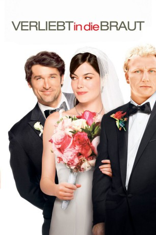
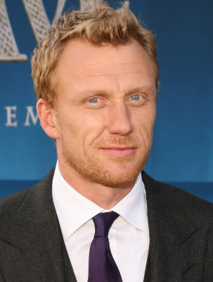
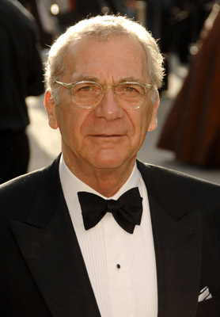
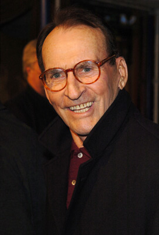
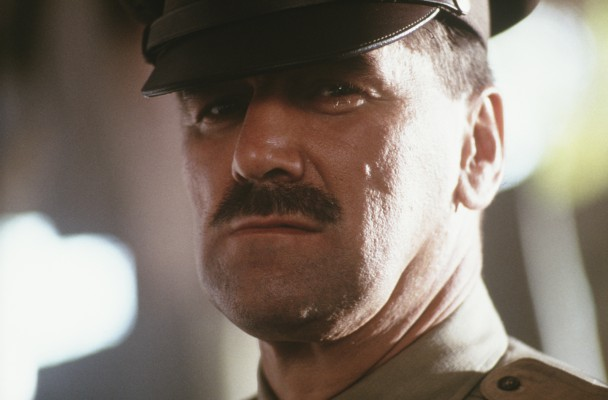
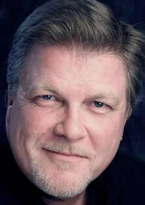
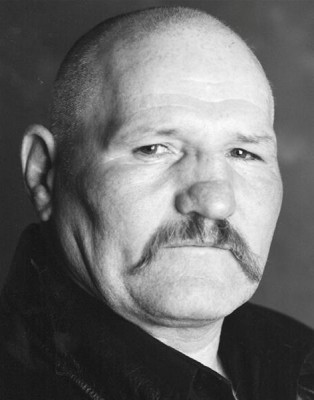

#3268 Verliebt in die Braut
Alternativ: Made of Honor
 
 IMDB-Wertung: 5.9 / 10
IMDB-Wertung: 5.9 / 10  Metascore: 37
Metascore: 37 
Romantische Komödie mit Patrick Dempsey und Michelle Monaghan, die zwei beste Freunde spielen. Während Tom eine Frau nach der anderen abschleppt, verliebt sich Hannah in einen Schotten, den sie heiraten möchte. Sie bittet Tom, ihre Brautjungfer zu werden - doch Tom hat mittlerweile ganz andere Ziele.
Jahr: 2008
Dauer: 101 Minuten
FSK: 0
Land: USA Studio: Columbia PicturesTonspuren: DD5.1 - ,
Untertitel: Deutsch,
Auflösung: 1080p (1920x800) Größe: 8427 MB
Genre: Komödie, Liebe
Regisseur: Paul Weiland
Drehbuch: Adam Sztykiel, Deborah Kaplan, Harry Elfont, Adam Sztykiel
Soundtrack: Rupert Gregson-Williams
Darsteller:
 Patrick Dempsey als Tom
Patrick Dempsey als Tom Michelle Monaghan als Hannah
Michelle Monaghan als Hannah-  Kevin McKidd als Colin
- Kadeem Hardison als Felix
 Chris Messina als Dennis
Chris Messina als Dennis Richmond Arquette als Gary
Richmond Arquette als Gary Busy Philipps als Melissa
Busy Philipps als Melissa- Whitney Cummings als Stephanie
- Emily Nelson als Hilary
 Kathleen Quinlan als Joan
Kathleen Quinlan als Joan-  Sydney Pollack als Thomas Sr.
-  James Sikking als Reverend Foote
 Kevin Sussman als Tiny Shorts Guy
Kevin Sussman als Tiny Shorts Guy Beau Garrett als Gloria
Beau Garrett als Gloria- Christine Barger als Psycho Blogger
- Lilly McDowell als Lingerie Salesgirl
- Kelly Carlson als Christie - Wife #6
- Corinne Reilly als Restaurant Hostess
- Trip Davis als Waiter
- Hannah Gordon als Colin's Mother
-  Clive Russell als Cousin Finlay
 Myra McFadyen als Aunt Minna
Myra McFadyen als Aunt Minna- Mary Birdsong als Sharon at Bridal Shower
- Elisabeth Hasselbeck als Herself
- Marty Ryan als Chaise Husband
- Veronica Alicino als Long Island Wife
 Sarah Wright als Sexy Blonde
Sarah Wright als Sexy Blonde- Jaime Ray Newman als Ariel / Bakery Date
- Ellie Knaus als Sick Monica
- Annalaina Marks als Barbara / Antiques Date
-  Forbes KB als Man at Highland Games
- Murray McArthur als Driver in Scotland
-  Rab Affleck als Sheep Herder
- Finlay Welsh als Ferry Porter
 Ron Donachie als Horse Owner
Ron Donachie als Horse Owner- Jennifer De Minco als Woman in China Department
- Christina Hogue als Beautiful Girl
- Bella Weiland als Child in Scottish Church
- Angie Cole als Jungle Jane , uncredited
 Paul Grace als JFK Airport Police , uncredited
Paul Grace als JFK Airport Police , uncredited- Callum Mitchell als Highlander at Highland Games , uncredited
- Guy Nardulli als Basketball Player , uncredited
- Brandon Saario als Paul , uncredited
- Travis Seaborn als Guy at Christies Limo , uncredited
- Paul Weiland als Man on Plane Next to Hannah , uncredited
- Selma Stern als Grandma Pearl
- Craig Susser als Christie's Lawyer
- Valerie Edmond als Cousin Kelly
- Cathleen McCarron als Cousin Cathy
- Eoin McCarthy als Cousin Ewan
Datei: X:\2008(N-Z)\Verliebt in die Braut (2008, FSK0, 1920x800).mkv seit 25.02.2016
Festplatte: HD 2008(G-Z)-2009(A-F)
 Es gibt insgesamt 91 Filme in der Gruppe '2008(N-Z)'
Es gibt insgesamt 91 Filme in der Gruppe '2008(N-Z)'